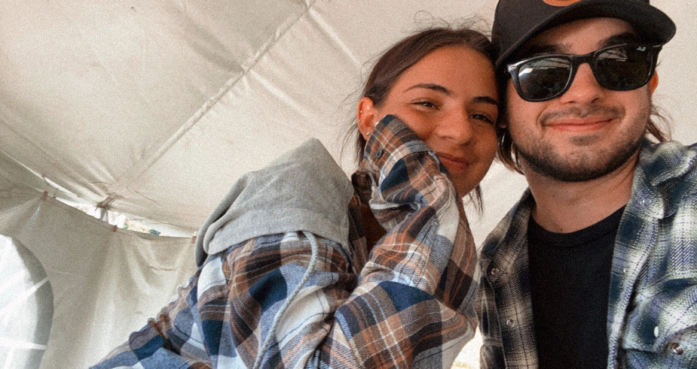
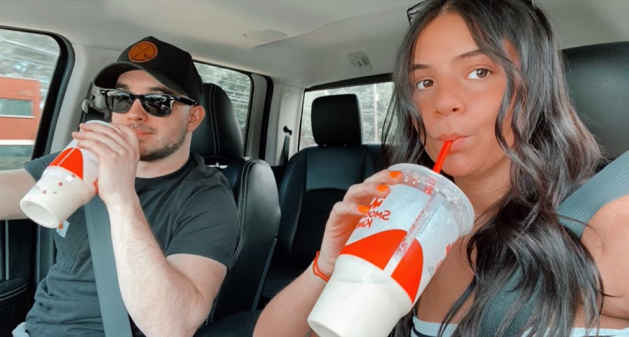
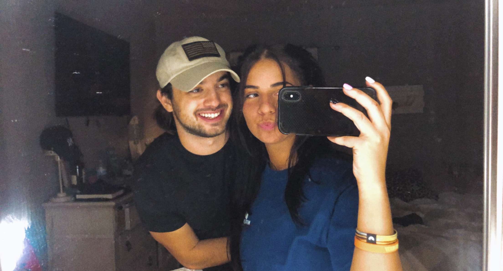
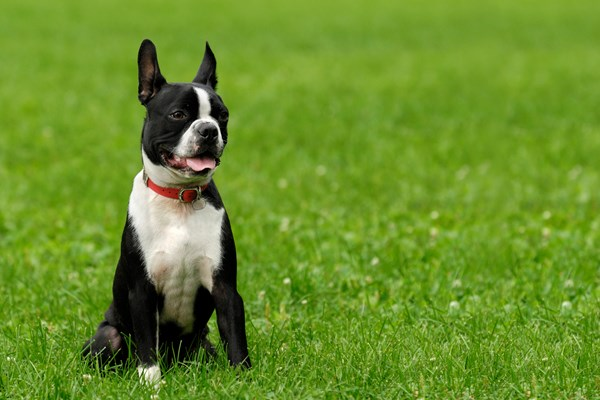

About Us
Sean & Gia have been dating for some time now. They're crazy about being in eachother's company all the time. And also even crazier about animals.... well... she is a tad bit more. They frequently spend time with family and friends whether its family gatherings or just lounging around the house. Both enjoy snowboarding in the winters , and traveling to upstate NY in the summers. Avid country music listeners ... and we all know country music leads to TAILGATES & CONCERTS. Recently they have been thinking that a dog would only heighten all of their experiences. But they can't deceide on what breed of dog they want. Hopefully this list will help break down each dog in the running.
  Doberman

- Extremely loyal
- Top 5 smartest dogs
- Playful and affectionate with family & Children
- You can feel safe with this dog around. they make great guard dogs
- Considered a "Large" breed... but a also possesses a very sleek, muscular physique
- Very easy breed for grooming. Doberman's have "short" hair
- Extremely active to keep up with our crazy lives
- Normally a very healthy breed
- OVERALL A BADASS
- For more information on this breed vist the American Kennel Club!
Boston Terrier

- VERY lovable
- Also known as the American Gentleman
- They are intelligent & affectionate by nature
- Considered a "Small" breed.. but also sturdy & muscular (so they say..)
- Little commedians.. always goofy and playful (even when they're being serious)
- Can be active, and also be lazy on the couch with you
- "Short" haired (but sometimes a little smelly..)
- Normally live long healthy lives
- OVERALL A GOOFY MUNCHKIN
- For more information on this breed vist the American Kennel Club!